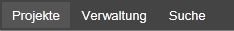
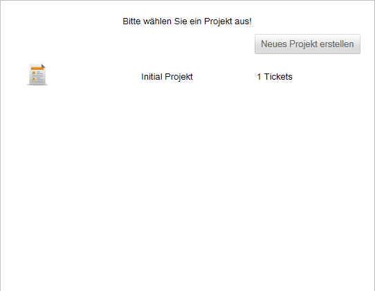
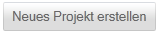

Projektübersicht
Um zur Projektübersicht zu gelangen, klicken Sie in der Navigationsleiste auf "Projekte".

Es öffnet sich dann die Projektübersicht, mit den hinterlegten Projekten.

Durch Klicken auf den Button  können Sie ein neues Projekt erstellen. Weitere Informationen dazu finden Sie hier.
Um ein Projekt zu bearbeiten Klicken Sie auf das entsprechende Bearbeitensymbol . Weitere Informationen dazu finden Sie hier.
Created with the Personal Edition of HelpNDoc: Easily create HTML Help documents